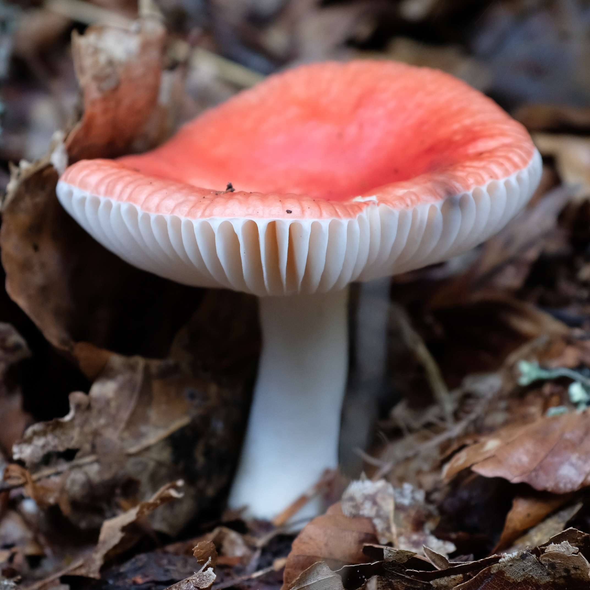
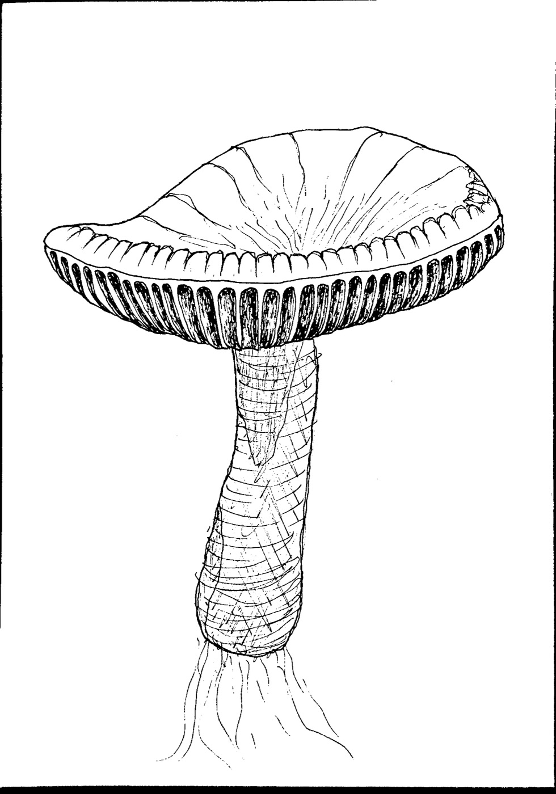
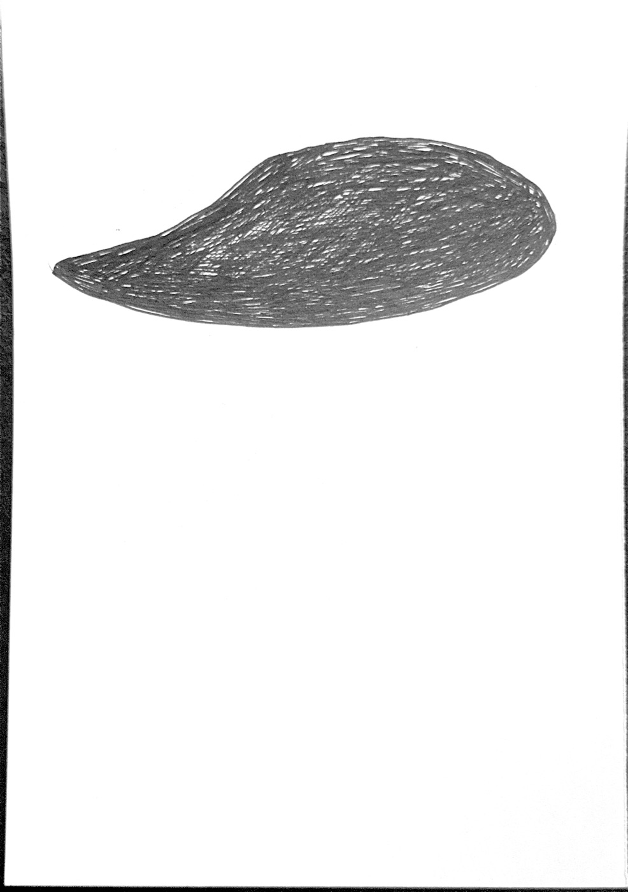
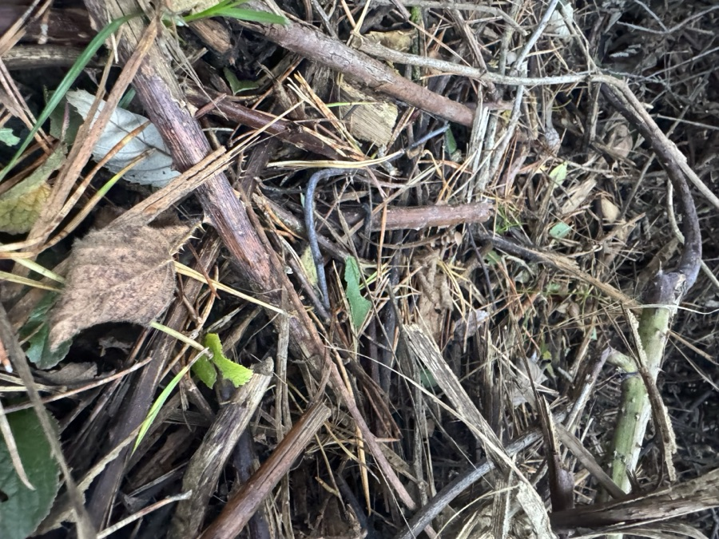
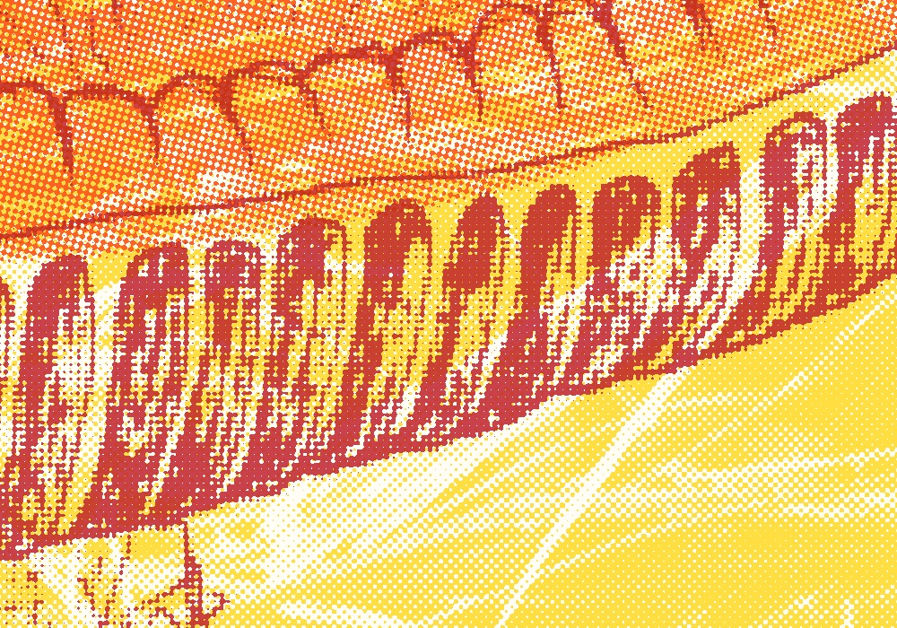
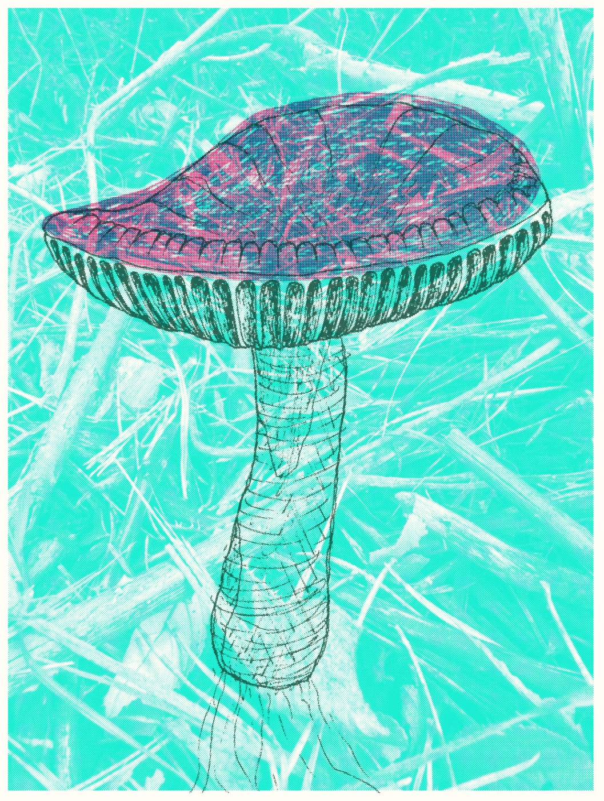

Getting started
A riso prints one ink at a time, so you draw one sheet per ink. Here's a mushroom from start to finish: a photo, two drawings, a phone scan, and a few minutes in Risolino.

01 Find a reference
Anything with clear shapes works. This one's a russula from a walk in the woods: a red cap, white gills and stem, and a lot of leaf litter that won't make the drawing.

02 Draw one sheet per ink
Draw everything in black, on plain white paper, one sheet for each colour. You choose the colours later. Use the same paper size for each sheet and keep the drawing in the same place on each one. Tracing over the first sheet on a window or light box is the easy way.
How dark you draw sets how heavy the ink is. Solid black prints solid colour, and lighter hatching prints as a lighter tint.


03 Scan them with your phone
On an iPhone, open Notes or Files and choose Scan Documents. Scan the sheets in order, one page each, and save. You get one PDF with a page for each layer. Any scanner works, as long as the background comes out white.
04 Drop the PDF into Risolino
Open Risolino and drag the PDF onto the page. Each page becomes a layer, in grayscale: black is full ink and white is bare paper. Click a layer's colour strip to choose an ink.
Layers print from the bottom of the list up, so drag the handles until the line layer is on top.
05 Add a background
Drop in any photo as a background texture. It's added as another layer and turned to grayscale like the scans, so its shapes print in whatever ink you give it. For a lighter effect, turn on Advanced layer options and lower that layer's opacity.



06 Make it look printed
Most of the character comes from the Setup panel:
- Paper size: Smallest layer crops everything to the smallest layer, here the scans, so the photo behind fits the drawing.
- Paper color: the ink is see-through, so the paper shows through everything. Try a few.
- Shading: Dot screen gives classic halftone dots, as in these prints, and Grain turns tints into a modern riso stipple.
- Registration jitter: real passes never quite line up. Hit Re-roll until you like how they've landed.
If a layer needs nudging into place, Compose lets you drag it around and resize it by its corners. Click the preview to look at it at 100%. The zoomed-out view can shimmer, and the detail is where it pays off:

07 Download, then try another
Download saves a full-resolution PNG. The layers stay where they are, so you can swap the inks and the paper and download again.
Try lots of colours. The same three layers give a very different print with each set of inks. Put a dark ink on the line and a light one on the wash, then swap them round. Or keep everything in one family, like pinks over pink. The background ink sets the mood of the whole sheet: yellow feels warm and lilac feels quiet.



Try it with these
Grab the two scans (PDF) and the background photo, drop them into Risolino, and make your own version. Everything runs in your browser and nothing gets uploaded.